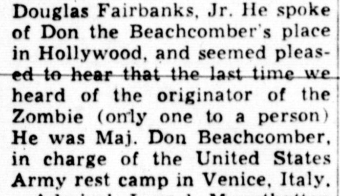

The Man Who Invented an Island
Tiki bars have a single founding father, and he built the first one out of driftwood, theatre props and rum nobody wanted. This is the story of Donn Beach — and why one page of our menu belongs to him.
In 1933, just as Prohibition collapsed, a 26-year-old from New Orleans named Ernest Raymond Beaumont Gantt opened a tiny bar off Hollywood Boulevard. He had spent his youth on boats around the Caribbean and the South Pacific — some of it, the legend says, running rum — and he decorated the room with what he had collected: fishing nets, worn oars, carved figures, palm thatch. He called it Don's Beachcomber, and soon enough he was calling himself Don, too. The name stuck so well he eventually made it legal: Donn Beach.
What he served was as invented as he was. American rum drinking meant rough daiquiris and rougher punches; Donn instead layered two, three, four rums in one glass — a light Cuban for brightness, a dark Jamaican for weight, a demerara for smoke — and wrapped them in fresh lime, exotic syrups and spice blends he made himself. He called them Rhum Rhapsodies. Hollywood called them irresistible. Chaplin drank there. So did Sinatra, Gable, Dietrich.

The coded bottles
Success bred imitators, and Donn answered with secrecy that bordered on espionage. His syrups and spice mixes went into bottles labelled only with codes — Donn's Mix #1, Spices #2, Gardenia Mix — so that even his own bartenders could not carry the recipes out the door. Some drinks died with their maker and stayed dead for decades, until drink historians (above all Jeff "Beachbum" Berry) spent years decoding old notebooks to bring them back. The Vault chapter of our menu — Zombie 1934, Jet Pilot, Pearl Diver, Cobra's Fang — is poured from those recovered codes.
"If you can't get to paradise, I'll bring it to you." — Donn Beach
His most famous invention nearly outgrew him. The Zombie — a tower of three rums and secret mixes built in 1934, allegedly to get a hungover businessman through a flight — became a national phenomenon at the 1939 New York World's Fair, where Donn's stand served it with a now-famous warning: limit two per customer. We keep the limit. It is not marketing.

The war, the wife, the island
The Second World War split Donn's life in half. He served in the Army Air Forces; his ex-wife and business partner, the formidable Cora Irene "Sunny" Sund, ran the company while he was gone — and when the marriage ended, she kept the mainland restaurants. The chain grew to more than a dozen Don the Beachcombers without him. Donn took his name, his notebooks and his restlessness to Hawaii, where he built a treehouse bar in Waikiki's International Market Place and spent the rest of his life doing what he always did: inventing paradise slightly ahead of schedule. He died in Honolulu in 1989.
Every tiki bar since — every carved mug, every flaming garnish, every rum too interesting for its own good — is quoting him, knowingly or not. We prefer to quote him knowingly. Raise a Zombie to the man who invented the island we are all still visiting.